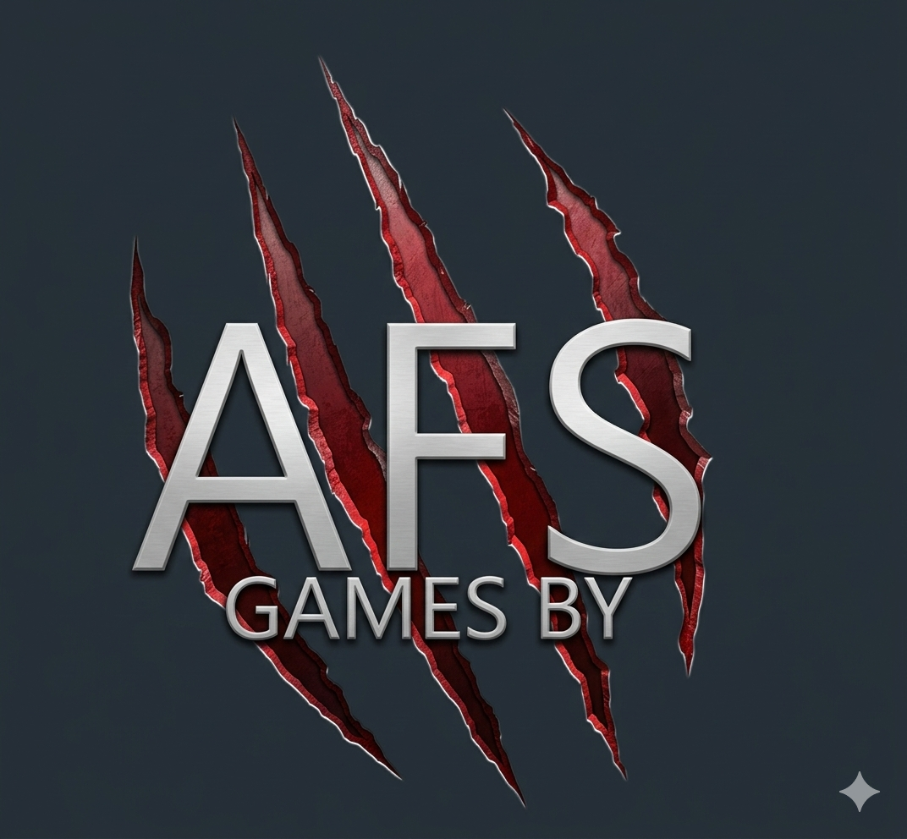

Manifesto
We build systems that reward mastery. We respect the player's intelligence. We design for those who seek depth.

We build systems that reward mastery. We respect the player's intelligence. We design for those who seek depth.
A survival progression experience set in a fractured primitive world. Nature dominates. Civilization survives in fragments. Corrupted zones challenge the unprepared.
No artificial advantages. No shortcuts. Every player begins equal. Skill defines survival.
AFS stands for Axiom Forge Studios. We forge experiences based on foundational principles, building structured systems designed to challenge and respect the player.